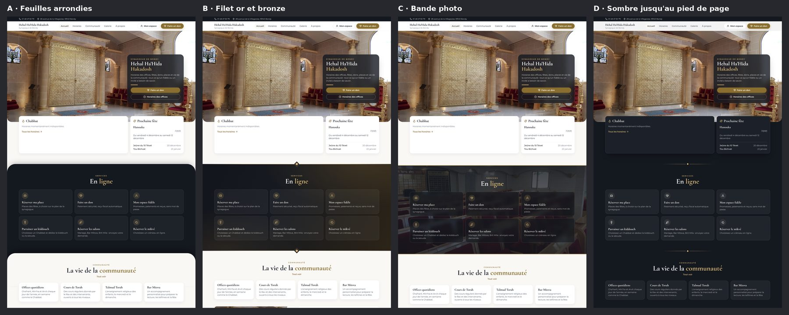
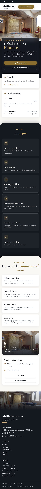
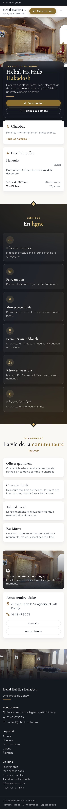
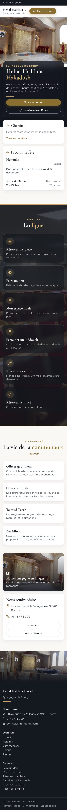
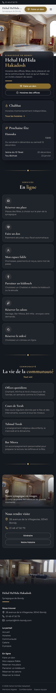

Accueil du portail : 4 nouvelles pistes pour la jonction noir et ivoire
Maquettes seulement, le site n'est pas modifié. Vue d'ensemble d'abord, puis chaque piste en entier (ordinateur à gauche, téléphone à droite).
Vue d'ensemble, ordinateur

Vue d'ensemble, téléphone
A · Feuilles arrondies
La bande sombre monte en arrondi sur l’ivoire, puis l’ivoire remonte en arrondi sur le sombre. Aucun dégradé, aucune ligne droite.

B · Filet or et bronze
La bande devient un dégradé du noir vers un bronze très sombre, bordée d’un fin filet or avec un losange central.

C · Bande photo
Le fond de la bande est une photo de la synagogue très assombrie, bordée d’un liseré or.

D · Sombre jusqu’au pied de page
Tout ce qui suit la photo est sombre, cartes en verre, sections séparées par un filet or. Plus aucune jonction clair et sombre.
